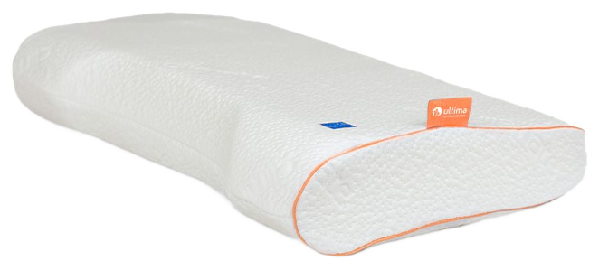

Producten — Kussens
De laatste, onmisbare laag van comfort.
Onze kussencollectie bestaat uit vier modellen, elk met een vulling die past bij jouw slaapvoorkeur en verkrijgbaar in meerdere hoogtes of hardheden. Ontdek welk kussen — en welke uitvoering — bij jou past.
01 — AW
Ergonomisch contourkussen in traagschuim.
AW is ons ergonomische contourkussen in traagschuim: het materiaal past zich nauwkeurig aan hoofd en nek aan, voor gerichte ondersteuning gedurende de hele nacht. Verkrijgbaar in vier hoogtes — AW8, AW10, AW12 en AW14 — en een aparte uitvoering voor buikslapers.
- Traagschuim
- Ergonomisch contourmodel
- 4 hoogtes: AW8, AW10, AW12, AW14, plus een uitvoering voor buikslapers
- Afneembare, wasbare hoes
- Geschikt voor zij- en rugslapers
Goed om te weten: traagschuim zoals bij AW reageert op lichaamswarmte — het kussen voelt de eerste minuten steviger aan en wordt daarna geleidelijk zachter.
Bekijk alle AW-hoogtes in detail
AW Discus
Discus
02 — Discus
Contourkussen in 100% natuurlatex.
Discus is een contourkussen in 100% natuurlatex, opgebouwd uit twee contourlagen met een opstaande nekondersteuning en een uitsparing voor rugligging. Veerkrachtig en ademend, met ondersteuning die niet inzakt gedurende de nacht — een natuurlijk alternatief voor traagschuim. Verkrijgbaar in drie hardheden: soepel, medium en stevig.
- 100% natuurlatex
- Contourmodel
- 3 hardheden: soepel, medium, stevig
- Afneembare, wasbare hoes
- Veerkrachtig, zakt niet in
Goed om te weten: natuurlatex is van nature stof- en bacteriewerend, een prettige eigenschap voor wie gevoelig is voor allergieën.
Bekijk alle Discus-hardheden in detail03 — Atlas
Ademend en duurzaam veerkrachtig.
Atlas is volledig opgebouwd uit twee contourlagen in 100% natuurlatex, met een opstaande nekondersteuning en een uitsparing voor rugligging: een ademend, duurzaam veerkrachtig kussen dat zijn vorm langdurig behoudt. Verkrijgbaar in drie hardheden: soepel, medium en stevig.
- 100% natuurlatex
- Ademend materiaal
- 3 hardheden: soepel, medium, stevig
- Afneembare, wasbare hoes
- Behoudt zijn vorm langdurig
Goed om te weten: een ademend kussen zoals Atlas helpt vochtopbouw tegen te gaan — fijn voor wie snel warm slaapt.
Bekijk alle Atlas-hardheden in detail
Atlas Balans
Balans
04 — Balans
Contourmodel in 100% natuurlatex.
Balans is een contourkussen in 100% natuurlatex, met een egale, stabiele ondersteuning voor een rustige nachtrust. Verkrijgbaar in drie hoogtes: 10, 12 en 14 cm.
- 100% natuurlatex
- Contourmodel
- 3 hoogtes: 10, 12 en 14 cm
- Afneembare, wasbare hoes
- Stabiele, egale ondersteuning
Goed om te weten: Balans biedt een egale ondersteuning die goed past als je regelmatig van slaaphouding wisselt.
Bekijk alle Balans-hoogtes in detailCombineer je kussens met de rest van de collectie
Bekijk ook onze boxsprings, matrassen, topmatrassen en gestoffeerde ledikanten om je bed compleet te maken.
Bekijk alle productenErvaar onze kussens zelf
Onze dealers helpen je graag het juiste kussen bij jouw slaaphouding te kiezen.
Vind een dealer